There is a market node whose state space consists of
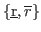 (as well as the prices of each firm's product). The market
changes states spontaneously at rate .
Intuitively, there are two reserve prices. The market alternates
between these reserve prices at rate . At rate 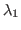,
the market emits a message that travels instantaneously to player
 that informs player of the reserve price. This message is
noiseless. At a rate of 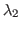, the market does the same but the
message is directed to player .
that informs player of the reserve price. This message is
noiseless. At a rate of 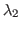, the market does the same but the
message is directed to player .
When player, 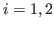 receives a message, he must make two decisions. First,
he must decide what price to charge in
. Secondly, he
can decide whether or not to send a message to player , indicating
what message he just received. The players are not restricted to
telling the truth and the message to the other player is costless. In
other words, the players can engage in cheap talk.
The rewards for player given his price is 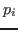, the other
player's price is 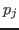 and the reserve price is 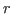 is given by:
In other words, the players split the market if they both charge below
the reward price and charge the same price. If the players charge two
different prices, the player with the lowest price captures the entire
market. If player is undercut or is charging above the reserve
price, then he earns zero reward. Here I normalize per unit cost to
0. Therefore, the term ``marginal cost pricing'' will be referred
to the case when a firm charges 0.
Finally, the market sends messages to player and player
simultaneously at rate and those messages traverse
instantaneously. The messages reveal the price of each player's
product currently in the market. Upon receiving the public message,
each player can decide to either revert to marginal cost pricing or
maintain its current price.
There are a ton of assumptions built into this model. Without
explaining, I just want to enumerate which ones can be relaxed.
- We can change from perfect substitutes to a case of linear
demand.
- We can change to a case where firms also observe their profits
instead of the exact state of the market.
- The public price message does not have to contain both players'
price. In other words, it could be at rate 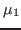 player 1's
price is known publicly and at rate 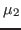, player 2's price is
known publicly. What is essential (at least for now) is that the
price revelations are public (i.e. player 1 sometimes learns
player 2's price and player 2 knows player 1 learned player 2's
price.)
- We can change to a case where instead of public realizations of
prices, there is a public realization of profits.
- We can extend to 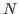 firms.
- We can extend to Cournot
- Upon receiving the public announcement, firms need not be
limited to only changing their price to marginal cost pricing.
However, the results will not be affected if this restriction is
changed but the formal justification will be much more involved.
All of these assumptions are used to make the initial math easier and
a bit cleaner. Each new assumption will add parameters and make the
math messier but all (to some degree) are able to be relaxed.
Now, let's define a collusive information sharing strategy as follows:
Truthful information sharing strategy: Upon receiving a
message that the reserve price is
(
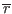), inform the other
player that the reserve price is
(
), set
price equal to
. Upon being told by the other player
that the reserve price is
(
), set price
equal to
(
). Upon receiving a public
message that the the price of both players in the market is the same,
take no action. Upon receiving a public message that the prices of
the two firms in the market are not the same, set price equal
to 0 forever
Intuitively, the truthful information sharing strategy is one in which
all information is shared between the firms and the firms charge the
reserve price whenever they are informed of it. The claim is that for
specific parameter values, there exists a Nash equilibrium in which
both players play the Truthful information sharing strategy.
justin
2016-05-10